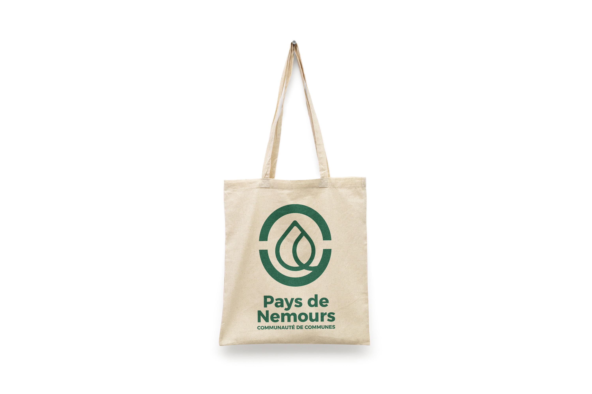

IDENTITÉ
VISUELLE
DE LA CCPN
Création du logo et de la charte graphique de la communauté de communes du pays de Nemours
2026
Graphiste
InDesign
Illustrator
Photoshop
Alternance à la mairie
de Nemours
Lors de mon alternance au sein de la mairie de Nemours j’ai pu mener le projet de la refonte du logo et de la charte graphique de la communauté de communes du pays de Nemours. En collaboration avec un autre alternant, nous avons entamé le processus par un brainstorming. L’idée maîtresse qui a émergé était celle de la graine qui germe. Cette métaphore incarnait non seulement le caractère rural du territoire, mais aussi son potentiel de croissance et d’innovation
